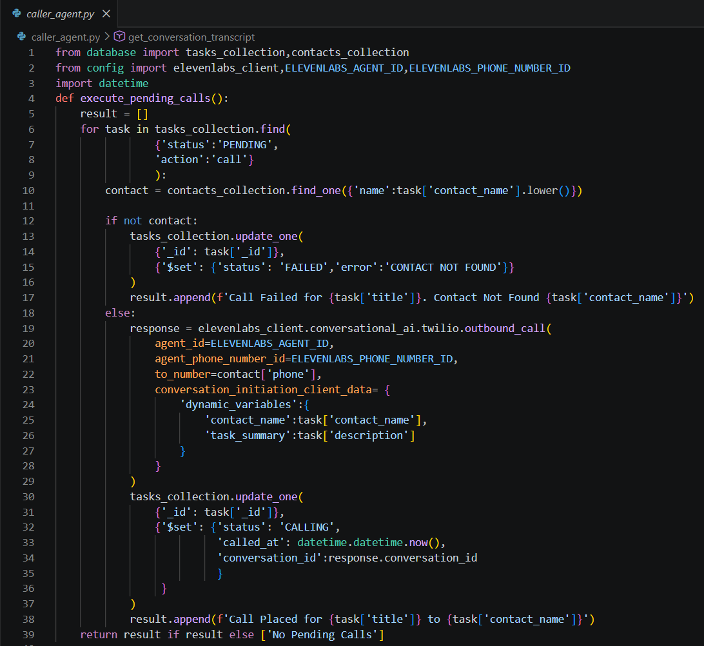
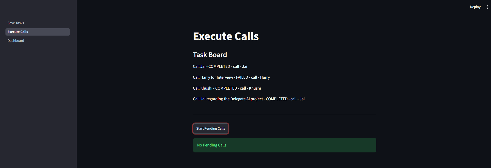
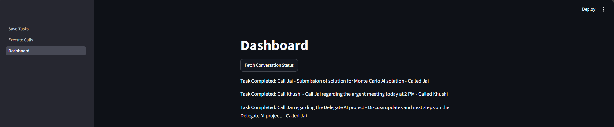
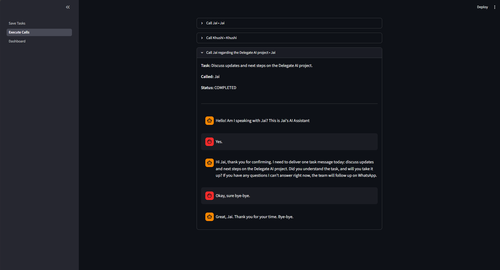
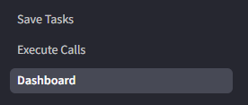

Date: 24th July 2026
Duration: 2 Hours
Training Company: Auribises Technologies
Trainer: Mr. Ishant Kumar
Today's session completed the core workflow of the Delegate AI project by enabling the application to execute tasks through AI-powered phone calls. After creating and managing tasks in the previous sessions, we integrated ElevenLabs Conversational AI to automatically place outbound calls, communicate with contacts, monitor conversation progress, and retrieve complete call transcripts. We also developed a dashboard to track call status, making Delegate AI a complete intelligent task delegation platform.
The first major feature implemented today was the Caller Agent. Instead of requiring users to manually contact people, Delegate AI now automatically searches for all pending call tasks stored in MongoDB, identifies the corresponding contact, and initiates an outbound phone call using the ElevenLabs Conversational AI API. Dynamic variables such as the contact name and task summary are passed to the voice agent so every conversation is personalized according to the assigned task.

A dedicated "Execute Calls" page was created within the Streamlit application to simplify call management. The interface displays all available tasks along with their current status and provides a single button to initiate every pending phone call. Once a call request is submitted successfully, the application stores the generated conversation ID and updates the task status to CALLING, allowing future progress to be monitored automatically.

Since phone conversations execute asynchronously, a dashboard was developed to periodically check the status of every active conversation. Using the stored conversation ID, Delegate AI communicates with the ElevenLabs API to determine whether a conversation is still in progress or has been completed. Once the call finishes successfully, the corresponding MongoDB task is automatically updated from CALLING to COMPLETED, ensuring that task records always reflect the latest execution status.

The final enhancement added the ability to retrieve complete AI conversation transcripts. For every completed call, Delegate AI fetches the transcript from ElevenLabs and displays it inside Streamlit using chat-style message components. This allows users to review exactly what the AI assistant discussed with each contact, making the system transparent, easy to audit, and useful for verifying whether delegated tasks were communicated correctly.

By the end of today's session, Delegate AI supported the complete task delegation lifecycle. Users could create tasks using natural language, store them in MongoDB, execute them through AI-powered phone calls, monitor live conversation status, and review detailed transcripts after completion. This integrated workflow demonstrated how multiple technologies—including Streamlit, OpenAI, MongoDB, and ElevenLabs—can work together to build a practical real-world AI automation platform.

No separate assignment was provided. The session focused on completing the Delegate AI project by integrating automated calling, conversation tracking, dashboard monitoring, and transcript visualization into a fully functional application.
View Delegate AI Project on GitHub
Today's session was the culmination of everything learned throughout the training. It was rewarding to see Delegate AI evolve from a simple project structure into a complete intelligent automation system capable of understanding user requests, managing tasks, placing AI-powered phone calls, tracking live conversations, and presenting detailed transcripts. Working on a project that combines multiple AI services with cloud databases and modern web technologies provided valuable insight into how production-ready AI applications are designed and implemented.
Completing Delegate AI marked the successful conclusion of the Agentic AI with Python Summer Training. Over the course of the program, I progressed from learning Python fundamentals and object-oriented programming to developing a full-stack AI application that integrates OpenAI, MongoDB, Streamlit, and ElevenLabs. This project not only strengthened my programming skills but also demonstrated how modern AI technologies can be combined to solve real-world automation problems through intelligent software solutions.